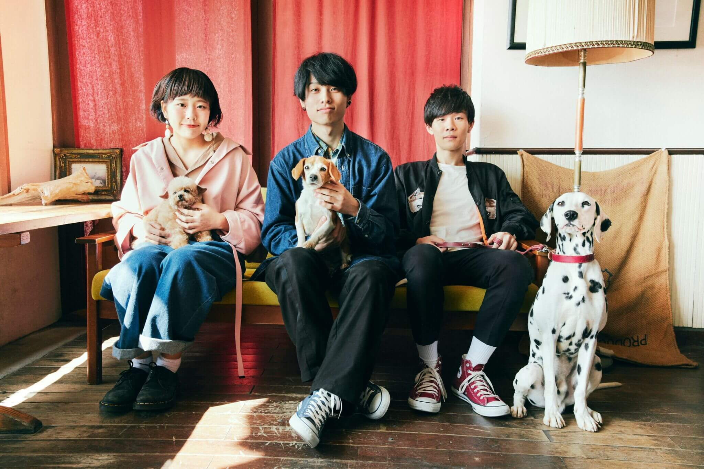
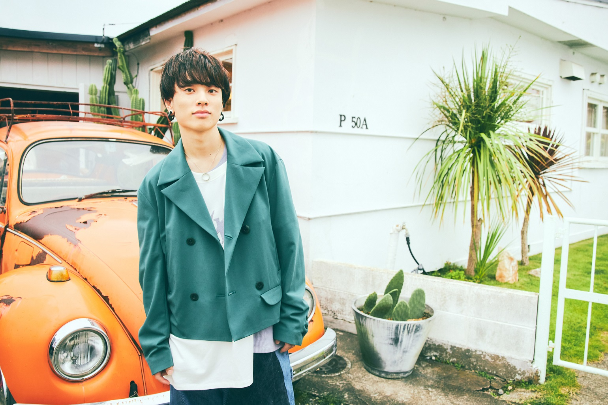
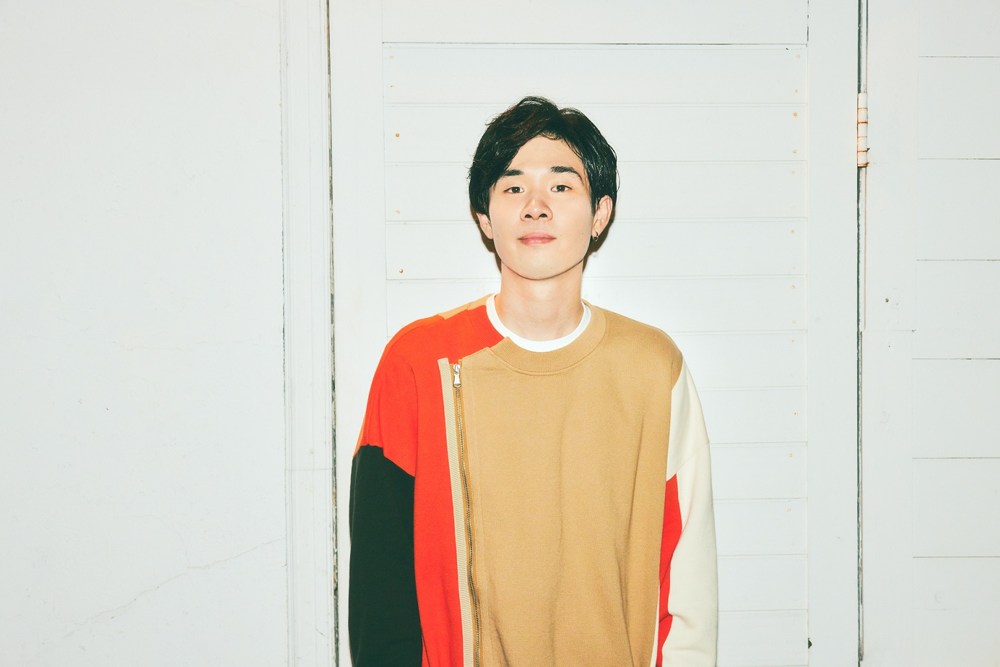
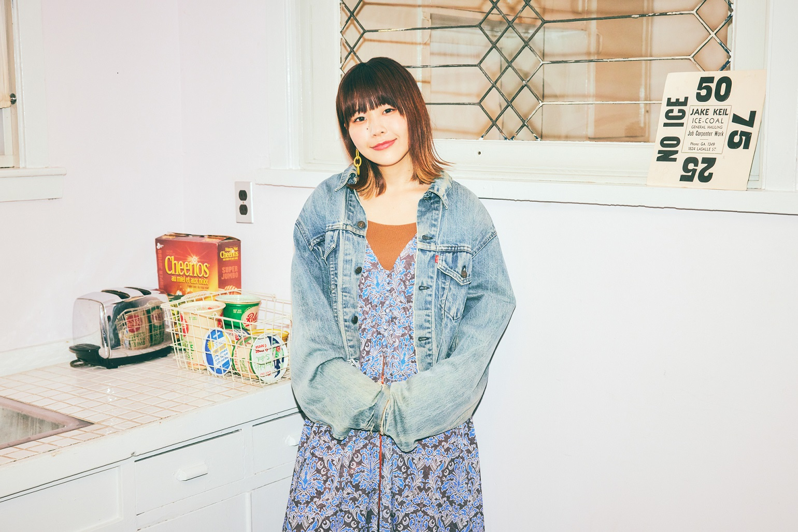

BIOGRAPHY

2013年
- 11月16日、バンド結成。
2015年
- 12月26日、前メンバーが脱退し、Vo.石原のみの活動になる。
2016年
- 4月3日、Ba.秋澤が加入。自主企画で初ライブを行う。Saucy Dog再始動。
- 8月2日、サポートドラマーだった、せとゆいかが正式加入。自主制作最後の音源1stE.P.「あしあと」を会場限定で発売開始。1stE.P.リリースツアー「たどる」では、全国約30ヶ所でライブを行う。
- 12月4日、MASH FIGT vol.5 グランプリ受賞。
- 12月27日、1stE.P.「あしあと」より、いつか」のMVを公開。
2017年
- 1月13日、「たどる」ツアーツアーファイナルを阿倍野ROCKTOWNで開催。
- 1月15日、MASHROOM2017出場。
- 5月24日、初全国流通作品1stミニアルバム「カントリーロード」発売。
- 9月、「カントリーロード RELEASE TOUR FINAL SERIES 『ずっと～東名阪対バンツアー』」を開催。
江坂MUSE、名古屋UPSET、渋谷TSUTAYA O-Crestにて開催。
2018年
- 1月、「カントリーロード RELEASE TOUR FINAL SERIES『もっと～東名阪対バンツアー』」を
東京、名古屋、大阪にて開催。 - 2月〜3月、「スペースシャワー列伝 JAPAN TOUR 2018」に出演。
福岡・札幌・仙台・新潟・大阪・東京にて開催。 - 3月7日、配信single「真昼の月」をリリース。
発売初日iTunesロックランキング8位にランクイン。 - 5月24日、2ndミニアルバム発売決定。
- 6月、初のワンマンツアー「one-one tour2018」を追加公演を含む全国11か所で開催。
- 9月、「one-one tour2018 Live at Shibuya WWW 07.11」配信リリース。
「ロケット」、「世界の果て」のライブ音源を配信。 - 10月、「ワンダフルツアー2018」対バン篇を全国15ヶ所で開催。
- 11月〜12月、「ワンダフルツアー2018」ワンマン篇を全国10会場で開催。
今ツアーは対バン篇を含め25会場で開催。
2019年
- 4月、大阪城音楽堂・日比谷野外音楽堂にてワンマンライブ「YAON de WAOOON」を開催決定。
自主公演では共に自身最大キャパでのワンマンライブ。 - 7月、東京、名古屋、大阪にてTwo-Man Live 「One-Step Tour」を開催。
ゲストに先輩バンドを迎え対バン形式で開催。大阪BIGCATには04 Limited Sazabys、名古屋ダイアモンドホールにはクリープハイプ、Zepp DiverCityにはSUPER BEAVERを迎えた。 - 10月2日、1年半ぶりのリリースとなるミニアルバム「ブルーピリオド」を発売。
- 10月、「ブルーピリオド」の発売を記念し
ブルーピリオドRelease tour 「いつだって今日がはじまりツアー」開催決定。 - 12月18日、初の映像作品「LIVE DVD ＆ Blu-ray『YAON de WAOOON』
2019．4.30日比谷野外音楽堂」発売。
2020年
- 5月、Saucy Dog帰省ツアー～メンバーのご当地頂きます～開催決定。
2021年
- 2月5日、Saucy Dog one-man live 「send for you」開催。初の日本武道館公演。
翌日6日には、Saucy Dog 対バンイベント「リベンジエピソード」を、同じく日本武道館で開催する。 - Saucy Dog 対バンイベント 「リベンジエピソード」を2月6日に日本武道館、
3月31日に大阪なんばHatchにて開催決定。
Vo/Gt 石原 慎也

誕生日： 3月3日
出身地： 島根県
好物： トマトジュース


Ba 秋澤 和貴

誕生日： 12月18日
出身地： 高知県
Dr/Cho せと ゆいか

誕生日： 1月22日
出身地： 奈良県
好物： 甘いもの